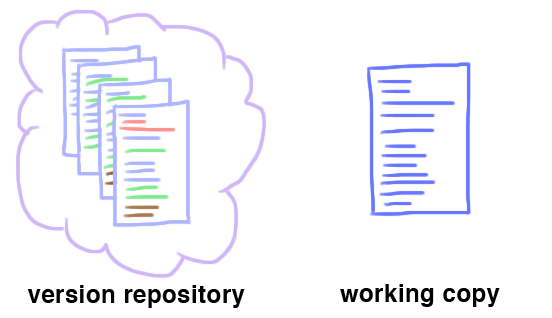

O Git trabalha em unidades chamadas repositórios. Um repositório git contém duas partes principais: o repositório da versão e a cópia de trabalho .
A cópia de trabalho consiste em arquivos normais organizados em uma estrutura de diretórios. O repositório de versões armazena versões anteriores desses arquivos e diretórios. Vamos desenhá-los assim:
Digamos que você faça uma edição em sua cópia de trabalho.
push é o inverso de git fetch. Onde git fetchatualiza um repositório de sombra do controle remoto, git pushpega sua versão local e a copia para um repositório remoto . Você usa isso para salvar suas alterações locais
de maneira mais permanente (por exemplo, em code.seas.harvard.edu).
Pull